A man alone at a corner café at the Harbor of the Heavens lists his wonders and his losses, then, on a single 'Yet', lets a distant window refocus his eyes into a smile.


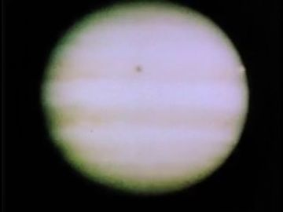
The poem
He asks to be noticed not as he looks but as he dreams: discovering water on Jupiter's moons, healing with silent prayers, molding a better world 'after walking alone'. The second ask widens to distances, younger selves 'watching and dreaming', elders clutching pearls and breath. Then the ledger of loss: burned love stories, 'victory-less seasons for a man that wanted just one win', ice frozen in thought, friendships in death and departure, and a self-love harvested 'more brilliant than the scarlet poppies and purple blossoms'.
The pivot is 13_L24, 'Yet from a distant window, beautiful and calm': loss turns to being seen. The governing images are optical: noticing, capturing eyes, refocusing, 'stepping back and letting them say hello' (the eyes act, not him). The poem ends on a promise, not a meeting: fatigue, 'windless seasons' (as spoken) and poppies won't stop a smile 'worth the promise of my heart'. It sets up 14, where the haze takes the harbor just as hope arrives.
Look
Two lights: flat pearl daylight with hard sun-glare cards for the tide-out opening, then blue dusk with warm point sources (string lights, one window) that the cut-outs edge-catch on their kraft borders. Café furniture and boat are thin card with ink line; water is layered glassine sheets slid against each other; the planet and moons are a separate sky card with brad-on moons. Keep archive inserts in their own tint (b/w café, blue Gouda) so the past reads as paper memory.
Our best elements
The strongest things we already have for this poem: generated footage, Atlantis views, found film and painted kit sheets.
13.1a plate: temple, tide out; POET walks the mud margin
figure-free, pearl light, exact 'tide out, boats aground' mood; strong silhouette for cut-out
the corner café itself; opens in the café's window card at 13_L01
a real waterside coffee-house with tables on the bank; b/w 1921 makes the café a remembered place
13.2/13.5 dusk-night quay plate behind the café tables
figure-free, long quay with blue lamps and strong reflections; vertical piers give pane surfaces
'Harbor of the Heavens' insert; moons reflected
sky literally in the water; violet palette; no figure
inside the round Jupiter sky card at 13_L03
real telescope Jupiter, banded, bright and round: a large bright surface that reads

13.3a behind YOUNG_POET at the rail: 'younger selves watching and dreaming'
blue-tinted masts and water match the dusk set; the tint itself says 'long ago'
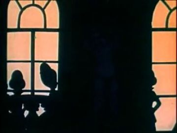
the distant window: arched peach panes with silhouettes
vertical lit panes on black: the strongest surface type; silhouettes match cut-out language

alt passage plate: near vertical window over wet floor
figure-free, the window is large and bright with reflections beneath

13.3c/d harbor_quay_night_fire plate
stone steps, warm lamps, dark water; empty stage for the letter fire
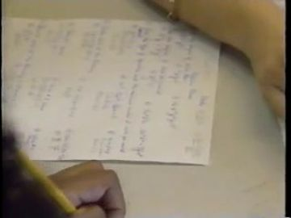
plays on the love-letter card as it curls
real handwriting filling the frame; the letter becomes a surface

13.4c flowering moment plate
figure-free, warm points across a field read as blooms turning to light
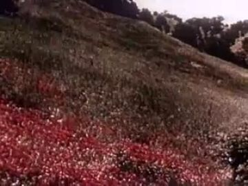
13.4a field he cuts through
a real scarlet slope; bright and large enough to carry the harvest
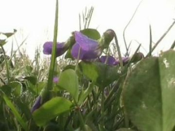
13.4b insert as he grips the purple stem
close, saturated violet blossoms against bright sky

petal_drift insert / 'time and tears have just claimed'
one held gesture (hand opens) with petals falling; reads like a cut-out insert
What we need
- No figure-free café-with-tables plate on a quay: build the café as card (4 tables, chairs, awning) over view_063/gen_e315da34f9
- Distant window: every gen candidate has a figure (gen_47cbab45f3, gen_bc968cf0ac); need a window card big enough to read (≥1/3 frame height) with SHE cut-out inside
- Jupiter + four moons sky card (only archive disc; no generated planet over water)
- Church pews set: gen_872d16167d has a tambourine centre-frame; need clean stained-glass/pew plate or card set
- Couples: pack has front/back/profile but no threequarter; no painted WHO reference for couples or elders
- Flat-palm-on-glass hand and wave hand for POET; sunglasses-off head
- Moored boat in three states (aground, lifting, sailing out)
- Burning-letter states (whole → catching → curled → ash) and small fire card
Characters
POET kit →
the man at the third table who wants to be noticed; burns his letters, harvests his own power, and is finally seen
Costume. red_black_sunglasses: black track jacket with red piping from shoulders down the chest, black track trousers, black Chelsea boots; sunglasses as their own plug-in card (on in 13.1–13.5b, OFF from 13.5c and stays off into 14)
Expressions. calm (walk), listening (head tipped toward couples), sad (head-down card, 13.2c/13.3d), awe (chin-up card, flowering), recognition (sunglasses off, brows lifted), reluctant (jaw set, 13.6a), small closed-mouth smile (13.6c)
Hands. pinch(coffee_cup), pinch(love_letters), grip(scarlet_poppy), grip(flower_armful), grip(purple_blossom), open, pinch(sunglasses), wave, grip(cafe_table edge), flat palm on glass (passage)
Cards to paint. sit body threequarter + profile; deep-crouch body; rail-lean threequarter_back; front stand flowering overlay (4 bloom stages); heads: listening, sad-down, awe, recognition no-glasses, reluctant, small smile; hands: flat palm, wave, grip(table edge), pinch(sunglasses), pinch(cup), grip(stem), armful crook
poet.13.action has blank panels for sit·threequarter, crouch, reach, sit·profile and 8 hand cells, with the WHO ref right (bearded man, red-piped black track suit). Missing: walk, rail lean threequarter_back (13.5a), front flowering stand (13.4c), wave and flat-palm hands, sunglasses-off head for 13.5c.
Its action sheet for this poem is on Character Kits v2.
open the action sheet →| action | beats | how the card does it |
|---|---|---|
| watching from the table | head toward water → head swings to couples → hold → head back down to cup | sit replacement body (profile/threequarter); neck brad only; swap listening → sad head rather than rotating |
| feeding the last letter | crouch settles → hand extends letter over fire → hold as edge catches → fingers open | deep-crouch replacement body; forearm brad; pinch(love_letters) card swaps to open hand; letter card hands off to fire layer |
| flowering | arms low with armful → arms open → hold chin up → blooms grow along arms | front stand body; shoulder brads to open; awe head; bloom cards brad-on along sleeves in 4 steps |
| refocus and hello | pinch sunglasses → lower to chest → hold, eyes on window → step back, wave | swap head sunglasses-on → off-recognition; pinch(sunglasses) card; wave hand is a single replacement card, no wrist wobble |
| palm on the glass (passage) | hand rises → palm lands flat → hold through the archive answer → release | threequarter_back body; upper-arm brad; flat-palm card laid on a clear acetate pane layer |
THE WOMAN (was "the poet" puppet) kit →
SHE in the distant window, 'beautiful and calm', who meets his eyes
Costume. window_woman_dress: teal sleeveless top and skirt with gold-ink floral pattern; full rounded afro
Expressions. calm, eyes OPEN, looking straight out, faint answering smile
Hands. relaxed, open (lifted a little, answering hello)
Cards to paint. front face eyes-open card; open-hand card; waist-up crop variant scaled to fill the window
woman.13.action has one blank stand·front panel and one open hand. The WHO head ref is a profile with eyes closed; 13.5b needs a frontal eyes-open face. She is far away, so paint a waist-up card that fills the window.
Its action sheet for this poem is on Character Kits v2.
open the action sheet →| action | beats | how the card does it |
|---|---|---|
| meeting his eyes | blurred in pane → focus resolves → hold gaze → open hand lifts slightly | front body only, framed by the window card; blur is a vellum sheet pulled away; one forearm brad for the open hand |
BROTHER, FRIENDS, ELDERS, COUPLES kit →
the couples who orbit at the tables and the elders praying with pearls and rosary
Costume. couple_summer_casual: linen shirts, light summer dresses and rolled trousers in pale washed colours; elder_robe_pearls: long church robes, long white pearl strand, wooden rosary
Expressions. joy (couples), calm, eyes lowered (elders)
Hands. open, grip (hand in hand), grip(pearl_necklace), grip(rosary), cup
Cards to paint. couple threequarter bodies (pack lacks it); paired turn card; elder kneel threequarter; pearl and rosary grip hands
family.13.action lays out sit·profile, dance threequarter/threequarter_back, turn·profile and kneel·threequarter, all blank, with no WHO painting for couples or elders. Packs have front/back/profile only.
Its action sheet for this poem is on Character Kits v2.
open the action sheet →| action | beats | how the card does it |
|---|---|---|
| counted orbit | walk in pairs → join both hands → slow turn → hold, foreheads close | pair mounted on one shared turntable brad so the couple turns as a single card; profile ↔ threequarter_back swap at half-turn |
| elders bow | kneel upright → hands clutch at chest → bow lower → hold breath | kneel replacement body; waist brad for the bow in 2 steps; hands fixed to chest card with pearls |
YOUNG POET kit →
'our younger selves watching and dreaming': the poet at six at the harbor rail
Costume. young_poet_child_clothes (from the existing pack): small shirt and shorts, child proportions, big watchful eyes
Expressions. awe, wide eyes
Hands. cup (chin on cupped hands)
Cards to paint. lean threequarter body; cupped-hands-under-chin card
young_poet.13.action has a blank lean·threequarter panel and a cup hand but no WHO image. The JSON lists no packs, but young_poet.child_clothes.* packs exist in kit3/v2; use them.
Its action sheet for this poem is on Character Kits v2.
open the action sheet →| action | beats | how the card does it |
|---|---|---|
| chin on hands | lean in → chin settles on cupped hands → hold, eyes follow couples | lean threequarter body over the rail card; both forearms pinned as one cupped-hands card under the chin; eye card slides |
Props
Sorted by priority. Each has its design, how to build it, the references found in the archive and our footage, and a prompt for its card sheet.
small round metal café table
painted tin-grey card, 70 cm, ink rim highlight; states: set (cup on it), empty
References found


Generation prompt
Prop card sheet: small round metal bistro café table, 70 cm, grey enamel with an ink-line rim, seen at eye level; flat corrugated-cardboard card, gouache + confident ink line, raw kraft cut edge, brass brads where it hinges, flat-on even light, plain background; cards: table set with espresso cup, table empty.
white espresso cup on saucer
8 cm white gouache card, thin blue rim line; states: full, held, on table
References found
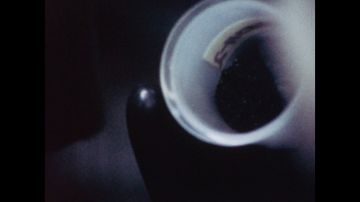
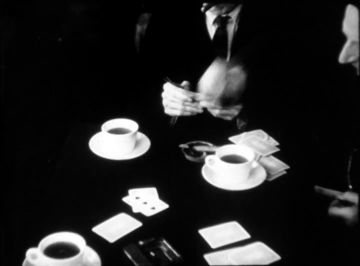
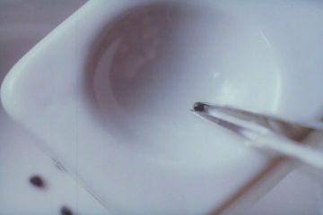
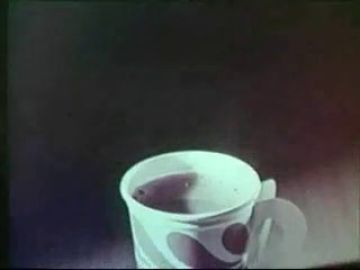


Generation prompt
Prop card sheet: white espresso cup on saucer, 8 cm; flat corrugated-cardboard card, gouache + confident ink line, raw kraft cut edge, brass brads where it hinges, flat-on even light, plain background; cards: cup on saucer, cup alone (to plug into a pinch hand).
lit window in a far building across the water, SHE in it
120 cm tall arched window card with peach-lit pane and dark frame, sized to fill a third of the frame; states: dark, soft-lit blur, lit sharp with SHE, lit empty
References found
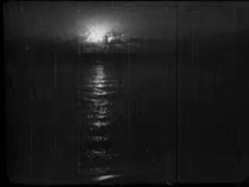
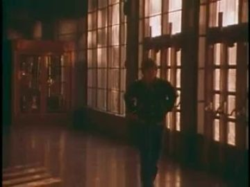
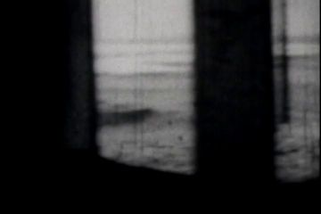

Generation prompt
Prop card sheet: tall arched window in a dark stone wall, peach-gold lit pane, mullions in ink; flat corrugated-cardboard card, gouache + confident ink line, raw kraft cut edge, brass brads where it hinges, flat-on even light, plain background; cards: window dark, window glowing out of focus, window lit sharp (empty pane for an insert), window frame only.
armful of cut scarlet poppies and purple blossoms
60 cm bundle card held in an arm crook; states: 1, 3, 5 blooms, emptied
References found
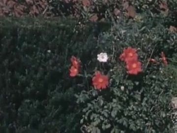
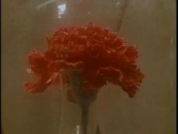
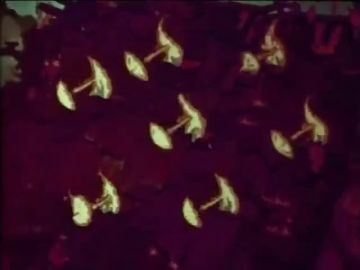

Generation prompt
Prop card sheet: armful of cut scarlet poppies and purple blossom spikes; flat corrugated-cardboard card, gouache + confident ink line, raw kraft cut edge, brass brads where it hinges, flat-on even light, plain background; cards: small bunch, medium bunch, full armful, loose single bloom (to brad onto a sleeve).
Jupiter-like planet with four moons appearing one by one
300 cm banded cream-ochre disc with a hole for an archive insert, four 12 cm moon discs on brads; states: planet low alone, +1..+4 moons
References found
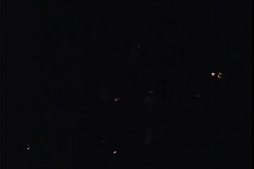
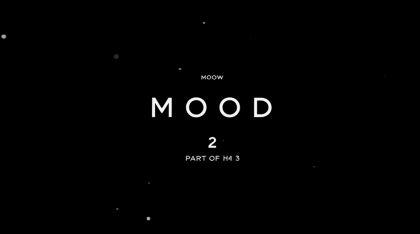

Generation prompt
Prop card sheet: large banded gas-giant planet disc in cream, ochre and rust bands, plus four small moons; flat corrugated-cardboard card, gouache + confident ink line, raw kraft cut edge, brass brads where it hinges, flat-on even light, plain background; cards: planet disc, moon 1, moon 2, moon 3, moon 4.
five folded handwritten letters, edges catching
22 cm cream paper cards with ink script; states: heap whole, one catching, curled black edge, ash flake
References found
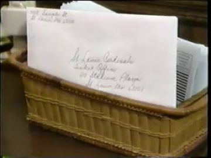
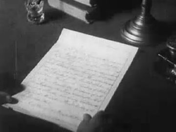
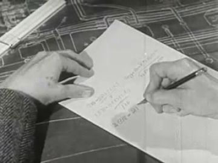


Generation prompt
Prop card sheet: folded handwritten love letters, 22 cm, cream paper with loose ink script; flat corrugated-cardboard card, gouache + confident ink line, raw kraft cut edge, brass brads where it hinges, flat-on even light, plain background; cards: heap of five, single letter flat, letter with orange-black burning edge, curled charred letter, ash flakes.
POET's black sunglasses
14 cm black card with red edge-line, plugs onto head; states: on face, held folded
References found
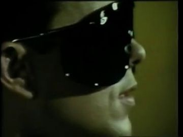
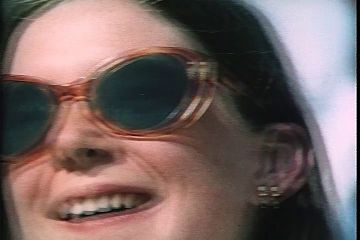

Generation prompt
Prop card sheet: black sunglasses, 14 cm, glossy black gouache lenses with one white glint line; flat corrugated-cardboard card, gouache + confident ink line, raw kraft cut edge, brass brads where it hinges, flat-on even light, plain background; cards: open (to sit on a face), folded (held in a pinch).
metal bistro chair
85 cm grey bent-metal card; states: in use, empty pushed back
References found
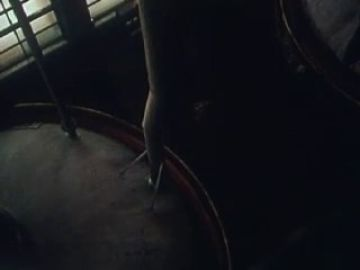


Generation prompt
Prop card sheet: metal bistro chair, 85 cm, grey; flat corrugated-cardboard card, gouache + confident ink line, raw kraft cut edge, brass brads where it hinges, flat-on even light, plain background; cards: chair side view, chair threequarter, chair pushed back empty.
iron rail along the quay edge
100 cm black iron rail with ink rivets; repeatable segment
References found
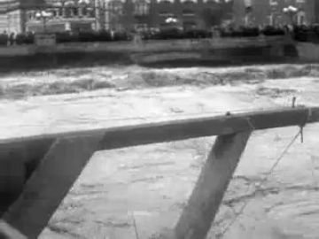
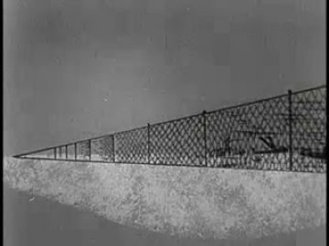
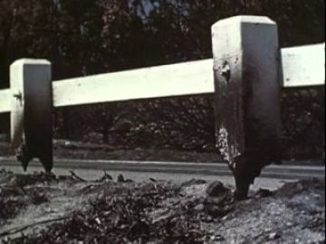


Generation prompt
Prop card sheet: iron harbor railing segment, 100 cm, black with rivets; flat corrugated-cardboard card, gouache + confident ink line, raw kraft cut edge, brass brads where it hinges, flat-on even light, plain background; cards: straight segment, end post.
small fire of sticks on the quay stones
50 cm stick fire, three flame cards on a hinge; states: catching, full, embers
References found
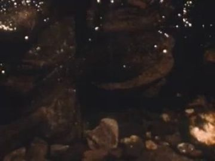
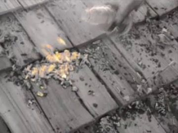
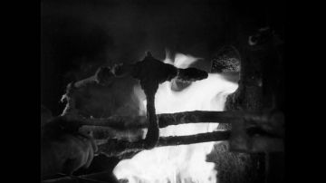
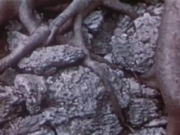

Generation prompt
Prop card sheet: small campfire of sticks on stones, orange-red flames; flat corrugated-cardboard card, gouache + confident ink line, raw kraft cut edge, brass brads where it hinges, flat-on even light, plain background; cards: kindling unlit, small flame, full flame, glowing embers.
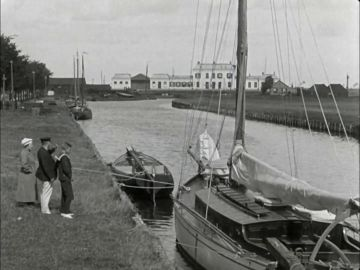
small wooden rowing boat with a mast
400 cm scale, weathered blue-white planks; states: aground lying over, lifting off mud, upright afloat, sailing out small
References found
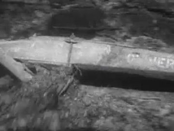
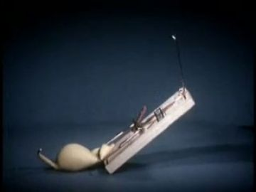
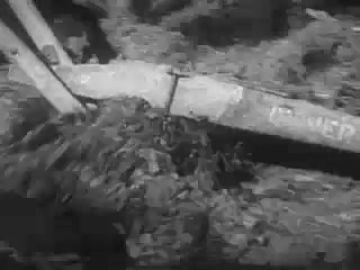
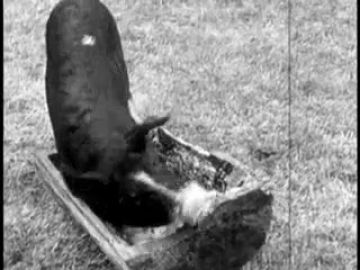
Generation prompt
Prop card sheet: small wooden rowing boat with a single mast, weathered blue and white planks; flat corrugated-cardboard card, gouache + confident ink line, raw kraft cut edge, brass brads where it hinges, flat-on even light, plain background; cards: boat tilted on its side, boat half-lifted, boat upright, boat small with sail up.
purple blossom spike on a long stem
75 cm violet spike card; states: standing, gripped
References found

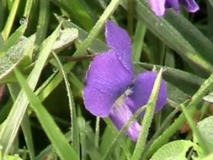
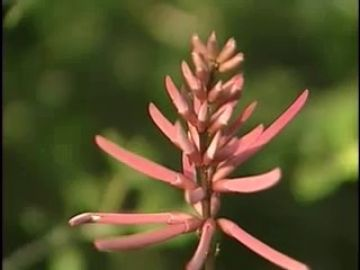


Generation prompt
Prop card sheet: purple blossom spike (lupin-like) on a long stem, 75 cm; flat corrugated-cardboard card, gouache + confident ink line, raw kraft cut edge, brass brads where it hinges, flat-on even light, plain background; cards: standing, cut.
single scarlet poppy on a long stem
70 cm stem card, crinkled scarlet petals with black centre; states: standing, cut
References found
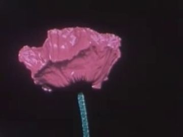
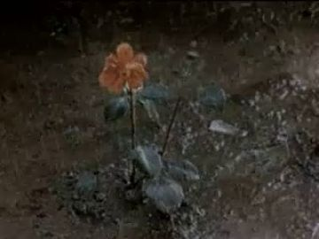
Generation prompt
Prop card sheet: single scarlet poppy on a long thin stem, 70 cm; flat corrugated-cardboard card, gouache + confident ink line, raw kraft cut edge, brass brads where it hinges, flat-on even light, plain background; cards: poppy upright, poppy cut and held, poppy bud.
long strand of white pearls
60 cm strand of white gouache dots on a thin card spine
References found
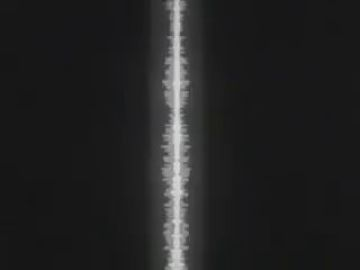
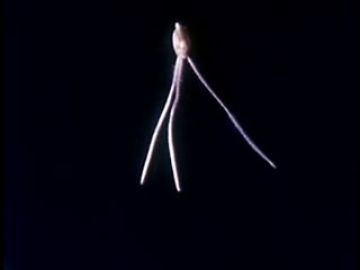
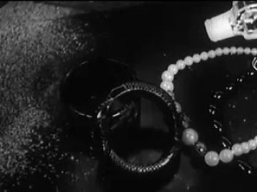
Generation prompt
Prop card sheet: long strand of white pearls, 60 cm; flat corrugated-cardboard card, gouache + confident ink line, raw kraft cut edge, brass brads where it hinges, flat-on even light, plain background; cards: strand hanging, strand clutched in a loop.
wooden rosary bead loop
40 cm brown bead loop with small cross
References found
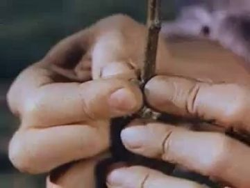
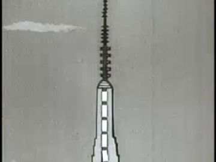

Generation prompt
Prop card sheet: wooden rosary, 40 cm, brown beads and small cross; flat corrugated-cardboard card, gouache + confident ink line, raw kraft cut edge, brass brads where it hinges, flat-on even light, plain background; cards: loop hanging, loop wound in a hand.
Places
harbor_cafe_day
pearl-lit harbor below the white temple: mud flats, tide out, a corner café's four tables on the stone quay; calm, a little too bright
Where the archive opens: the café's own window pane behind the tables (Schoonhoven 1921); the distant window card across the water; wet mud reflections (weak; use only bright film)
References: our footage, Atlantis views, found film


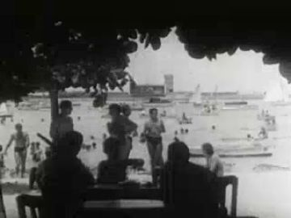
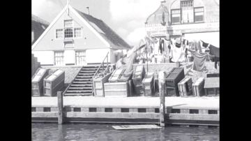
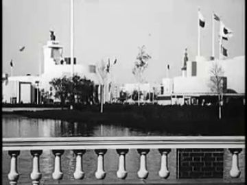
Generation prompt
Wide daylight harbor at low tide below a small white stone temple, mud flats with shallow channels, an empty stone quay with no people, flat pearl-grey light, long reflections, cinematic photographic plate, no figures
harbor_cafe_dusk
'the Harbor of the Heavens': the same quay in blue dusk, string lights over the tables, a banded planet low over the water with moons arriving
Where the archive opens: the Jupiter disc (round, bright); the far lit window; café pane
References: our footage, Atlantis views, found film


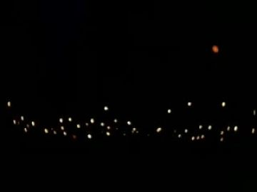
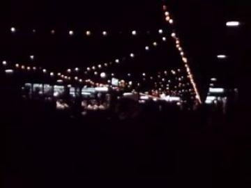
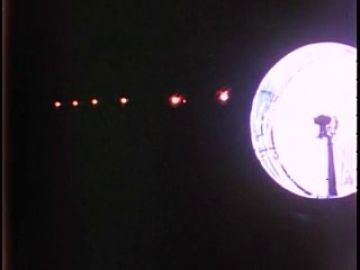
No plate yet.
church_pews
small wooden church, candlelit, two front pews; the elders bow before a stained-glass window
Where the archive opens: the stained-glass window (vertical, bright); a candle-lit side window
References: our footage, Atlantis views, found film


Generation prompt
Interior of a small old wooden church at night, two front pews, candles on the altar, a tall amber stained-glass window, no people, warm low light, photographic plate
harbor_quay_night_fire
stone steps down to dark water, one lamp, a small fire of letters on the stones; private and quiet
Where the archive opens: the letter card itself (Straight Talk 1992); the fire's glow on the wall at left
References: our footage, Atlantis views, found film


flower_field
a wide field of scarlet poppies and purple blossoms under a smoky sky; he cuts a path and the field becomes him
Where the archive opens: the sky above the field; the archive as the field itself
References: our footage, Atlantis views, found film


Generation prompt
Wide meadow of scarlet poppies and purple blossom spikes under a smoky dusk sky, tall stalks in foreground, no people, painterly photographic plate
Effects
| effect | how, in this cut-out world |
|---|---|
| sun_glare | a soft white paper disc on a top layer with additive blend; one hard glint card on the sunglasses |
| tide_rising | three glassine water sheets slid up 2 cm per beat over the mud card; the boat card rotates from lying to upright on a keel brad |
| dusk_falling | crossfade the day plate to the dusk plate under a blue gel overlay; cut-outs re-lit by switching to rim-lit versions |
| string_lights | punched holes in a black wire card backlit amber, 2-frame flicker on random bulbs |
| moons_appear | each moon is a brad disc that pops on a beat (13_L03), counted 1–4 like the couples |
| candle_flicker | two flame cards swapped on 3s plus a 5% luminance wobble on the church plate |
| fire_small / rising_sparks / smoke_plume | three flame cards on a hinge; sparks are punched scarlet confetti drifting up in code; smoke is torn vellum scrolling up |
| flowers_bloom_from_body | bloom cards brad onto his sleeves and shoulders in 4 stages, each pop on the words 'scarlet poppies and purple blossoms' |
| petal_drift | cut tissue petals falling in code with slow spin; reuse gen_d4b2d5fdf0 as an insert |
| defocus / rack_focus | a vellum sheet over the window card is pulled away on 'refocus yours'; mirror it with the sunglasses card leaving his face |
The puppet passage
his line · 13_L24
“Yet from a distant window, beautiful and calm,”
the archive answers · Far Speaking (1935)
“Why, we may even talk with distant cities.”
palm on a surface · a single lit window across the lagoon, far side of the water; its reflection repeats the picture on the surface
Keep. The fulcrum is right: 'Yet' (13_L24) answered by Far Speaking 1935, 'we may even talk with distant cities'. The palm flat on the café glass is one held gesture that reads, and the archive opens in a window, which is the surface type that works best.
Better. The far window across the lagoon is too small, and its reflection on water reads faint. Bring the surface forward: use a vertical pane plate (gen_9c5f9c7c4a, or the window card scaled to a third of the frame) and let Far Speaking open full-height there, with the reflection only as a dim echo. Put the palm on a clear acetate layer between him and that window. Swap the head to a chin-up 'listening' card on 'beautiful and calm' instead of rotating it. Keep the plate figure-free: no view_024 (it has a woman in it).
Other lines that could carry one:
- 13_L03 'discovering water on Jupiter's moons': cup held still at the lip (hand stops short); Who's Out There? 1975 Jupiter opens inside the round planet card over the quay
- 13_L14 'life has burned all of my love stories': letter held out over the fire, fingers open on 'burned'; Straight Talk 1992 handwriting plays on the letter card as its edge burns
- 13_L26–27 'capture my eyes as you refocus yours': pinch the sunglasses and lower them to the chest, then hold; the window card's vellum pulls off and Snow Queen 1959's lit arched panes resolve
Scene ideas
- Arrive at a café that is archive: POET's cut-out walks the quay card over gen_e315da34f9; on 13_L01 the café window fills with Schoonhoven 1921's coffee-house on the bank, as if he walks into 1921
- Counted orbits: couples on turntable brads circle under string lights on view_063; above them the Jupiter card runs Who's Out There? 1975, and a moon brad pops on each pair that settles
- Younger selves: YOUNG_POET chin-on-hands at the rail; behind him Gouda 1923's blue harbor plays in the water band, the masts lining up with the rail
- Elders: the two kneeling cut-outs before a stained-glass card; De Joodsche invalide 1939 (old woman at a table with flowers, arch_d9c5b36b-b4a2) glows dimly in a side window
- Burned stories: the five letter cards on view_097's stones, each playing a second of Straight Talk 1992 handwriting before its burn mask eats it; sparks rise into the lantern light
- Harvest: POET cuts a path through Golden Harvest 1950's red slope (archive as the field), the stalk cards falling; cut to gen_bad0cf8d7a's glowing field for the flowering, with gen_d4b2d5fdf0's petal hand as insert
- Close on the empty café chair card while gen_9e81657f62's fogged pier lamps creep in from the bottom: the haze bridge into 14
References to look for
| what | where to look |
|---|---|
| Saul Leiter's rain-window colour photographs | looking through steamed or wet glass, soft focus giving way to a sharp detail; the model for 'refocus yours' |
| Edward Hopper, 'Automat' and 'Nighthawks' | one figure at a small table and the geometry of lit glass at night |
| Roy DeCarava, Harlem photographs | Black men in quiet low light, dignity in stillness; the tone of POET at his table |
| Lotte Reiniger silhouette films | figures in lit window frames; a couple turning as one cut-out |
| archive: 1920s Dutch harbor town films (Schoonhoven, Stavoren, Gouda, Zaandam) | query 'koffiehuis', 'haven', 'kade', 'terras': waterside cafés with tables |
| archive: astronomy education films 1950s–80s | 'Jupiter telescope', 'Galilean moons', 'Voyager Jupiter' for a brighter planet disc |
| archive: home movies of couples dancing on terraces | 'boardwalk dance', 'terrace couple 1950s amateur' for the orbiting couples |
Our footage for this poem
The 20 generated clips and 8 Atlantis views closest to the poem (CLIP, image against its treatment and lines).


The kit
| status | kind | item | source |
|---|---|---|---|
| need | body | POET sit, crouch, rail-lean, flowering-stand replacement bodies | to generate into poet.13.action and replacements panels |
| need | body | couples threequarter + paired turn card; elders kneel | family packs + new cards |
| need | fx | glassine tide, vellum defocus, punched string lights, petal drift | code + paper |
| need | hand | POET hands: flat palm, wave, pinch(cup), pinch(letters), pinch(sunglasses), grip(stem), grip(table edge) | to generate |
| need | head | SHE eyes-open front face + waist-up window crop | woman.window_woman_dress pack + new card |
| need | prop | café table, chair, cup, sunglasses | to generate |
| need | prop | distant window card (4 states) | to generate; ref Snow Queen 1959 |
| need | prop | Jupiter disc + 4 moons | to generate; insert Who's Out There? 1975 |
| need | prop | love letters (5 states) + letter fire | to generate |
| need | prop | poppy, blossom, armful (3 sizes), bloom brad-ons | to generate |
| need | set | church pews plate | to generate |
| partial | body | YOUNG_POET lean + cupped-hands card | young_poet.child_clothes pack |
| partial | head | POET heads: listening, sad-down, awe, recognition no-glasses, reluctant, small smile | heads pack plates exist; paint expressions |
| have | body | POET red_black body packs (front/threequarter/profile/back) | existing pack poet.red_black_sunglasses.* |
| have | set | day harbor plate | assets/gen_e315da34f9.jpg |
| have | set | dusk quay plate | assets/view_063.jpg |
| have | set | quay fire plate | assets/view_097.jpg |
| have | set | flower field plate | assets/gen_bad0cf8d7a.jpg + Golden Harvest 1950 |
| have | sound | dry VO 13 (100.7 s, longest hold 1.9 s after 'forever.') | 13_How to Win My Heart_mixdown_RY_250626.wav |